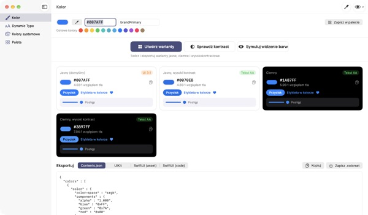
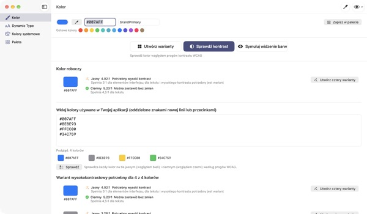
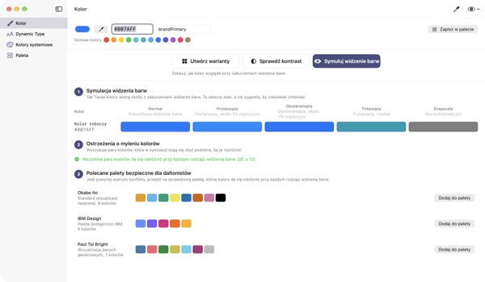
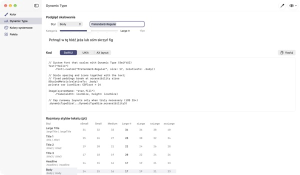

Jeden kolor na wejściu,
cztery wyglądy na wyjściu
Kolory systemowe same dopasowują się do trybu ciemnego i opcji Zwiększ kontrast. Kolory twojej marki nie. TetraTint bierze jeden kolor z trybu jasnego, tworzy warianty Jasny, Jasny z wysokim kontrastem, Ciemny i Ciemny z wysokim kontrastem i od razu eksportuje je do Xcode.
Wszystkie funkcje są bezpłatne. Wymaga macOS 14 lub nowszego.

Wypróbuj kolor swojej marki
Wklej wartość hex albo stuknij gotowy kolor. Tym samym wyliczeniem co w aplikacji od razu zobaczysz cztery warianty i ich kontrast.
Kolor marki zginął ci kiedyś w trybie ciemnym?
Niebieski wybrany w trybie jasnym na czerni wygląda mętnie, a osoby z włączoną opcją Zwiększ kontrast ledwo czytają tekst. Szukanie koloru dla każdego wyglądu i ręczne liczenie kontrastu zajmuje pół dnia. TetraTint wyprowadza warianty tak, jak zmieniają się kolory systemowe między wyglądami, i od razu pokazuje, czy każdy przechodzi.
Sprawdź naraz wszystkie używane kolory
Wklej całą listę hex z aplikacji, a każdy kolor dostanie ocenę: można zostawić bez zmian, potrzebny wysoki kontrast albo tylko do dekoracji.
Jednym kliknięciem problematyczny kolor zamienia się w cztery warianty zapisane w palecie. Przydaje się też przy przygotowaniu oznaczenia dostępności Wystarczający kontrast w App Store.

Zobacz oczami osób z daltonizmem
Podejrzyj paletę przy protanopii, deuteranopii, trytanopii i w skali szarości, z ostrzeżeniem dla par, które trudno odróżnić.
Wczytaj jednym kliknięciem palety przyjazne daltonistom Okabe–Ito, IBM i Paul Tol albo przyciskiem z okiem w prawym górnym rogu zobacz tak całą aplikację.

Własne czcionki też podążają za rozmiarem tekstu
Zobacz 11 stylów tekstu w 7 rozmiarach i przesuń suwak, by podejrzeć prawdziwe rozmiary.
Wpisz nazwę PostScript czcionki i dostaniesz kod dla UIKit, SwiftUI i @ScaledMetric, a także kod zmieniający układ przy dużym tekście.

Trzy kroki na start
- 1
Podaj kolor bazowy
Wklej hex, pobierz kolor z dowolnego miejsca ekranu kroplomierzem albo wybierz gotowy.
- 2
Sprawdź cztery warianty
Odczytaj plakietki kontrastu i popraw próbnikiem warianty, które nie pasują do marki.
- 3
Eksportuj do Xcode
Skopiuj lub zapisz jako Contents.json, .colorset albo kod UIKit i SwiftUI.
Jak powstają warianty i co znaczą plakietki
- Jasny (domyślny)
- Twój kolor taki, jak go wpisano
- Jasny, wysoki kontrast
- Nieco bardziej nasycony i przyciemniany do 4.5:1 na bieli
- Ciemny
- Nieco jaśniejszy i żywszy (jasność +5, nasycenie +3)
- Ciemny, wysoki kontrast
- Rozjaśniany do 7:1 na czerni
- Tekst AA
- Kontrast z tłem co najmniej 4.5:1, nadaje się do tekstu
- UI 3:1
- Co najmniej 3:1, wystarczy dla przycisków i ikon, ale nie dla tekstu
- Niski
- Poniżej 3:1, nie używaj do tekstu, ikon ani statusów
- Eksport
- Contents.json · .colorset · UIKit · SwiftUI albo cała paleta jako jeden .xcassets
Wartości referencyjne kolorów systemowych pochodzą z Human Interface Guidelines Apple i mogą się zmieniać wraz z aktualizacjami systemu. W wydanej aplikacji używaj API kolorów systemowych.
Częste pytania
Czy to naprawdę za darmo?
Tak. Wszystkie funkcje są bezpłatne, bez konta i bez reklam. Jeśli aplikacja pomogła, możesz zostawić napiwek w Ustawieniach; niczego to nie odblokowuje.
Wygenerowane warianty nie pasują do naszej marki.
Każdy wariant poprawisz próbnikiem kolorów na jego karcie. Utwórz wszystko od nowa odrzuca ręczne zmiany i wyprowadza wszystko ponownie z koloru bazowego.
Jak liczone są warianty?
Zgodnie z tym, jak kolory systemowe Apple naprawdę zmieniają się między wyglądami: w ciemnym nieco jaśniej i żywiej, w jasnym z wysokim kontrastem co najmniej 4.5:1 na bieli, w ciemnym z wysokim kontrastem co najmniej 7:1 na czerni.
Co oznacza ostrzeżenie w symulacji widzenia barw?
Że w tej symulacji różnica dwóch kolorów (ΔE) spada poniżej 12 i trudno je odróżnić. Nie polegaj tylko na kolorze: dodaj ikony, wzory lub etykiety albo przejdź na bezpieczną paletę.
Jak sprawić, by własna czcionka obsługiwała Dynamic Type?
W sekcji Dynamic Type wpisz nazwę PostScript czcionki i wybierz styl, a dostaniesz kod UIKit, SwiftUI i @ScaledMetric. W rozmiarach dostępności Body rośnie ponad trzykrotnie, więc unikaj stałych wysokości i lineLimit(1).
Wyeksportowane kolory wyglądają inaczej niż systemowe w mojej aplikacji.
Wartości referencyjne pochodzą z Human Interface Guidelines i mogą się różnić między wersjami systemu. Do kolorów systemowych zawsze używaj API UIColor lub Color.
Gdzie zapisuje się moja paleta?
Tylko na twoim Macu. Nic nie jest synchronizowane z chmurą ani nigdzie wysyłane. Szczegóły w polityce prywatności.
Czy kolor pobrany kroplomierzem jest zapisywany?
Nie. Odczytywana jest tylko wartość koloru w wybranym punkcie i staje się kolorem roboczym. Żaden obraz ekranu nie jest zapisywany ani wysyłany.
Na jakich Macach działa?
Na macOS 14 (Sonoma) i nowszych. Przy eksporcie sam wybierasz, gdzie zapisać pliki.
Błędy, pomysły albo pytania? Napisz na leeo@kakao.com. Zwykle odpowiadamy w ciągu 2–3 dni.